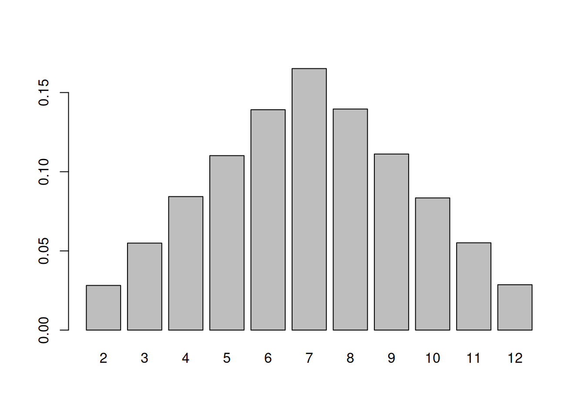
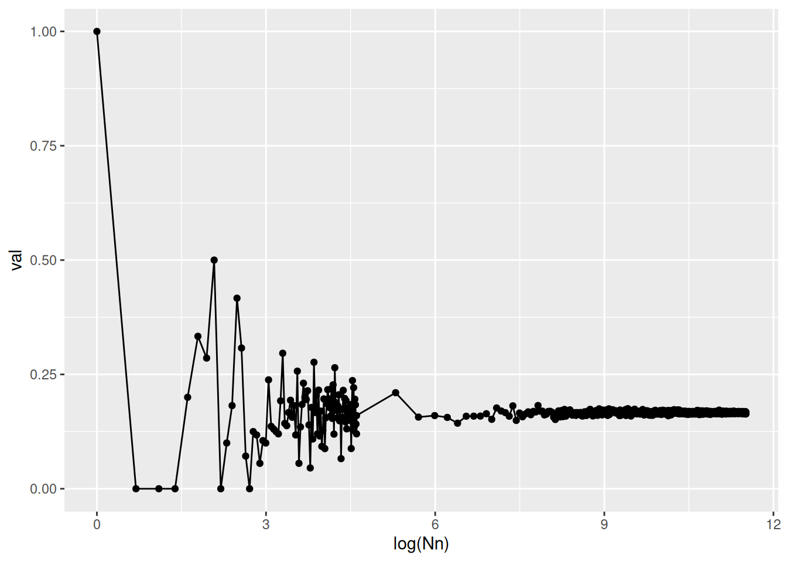
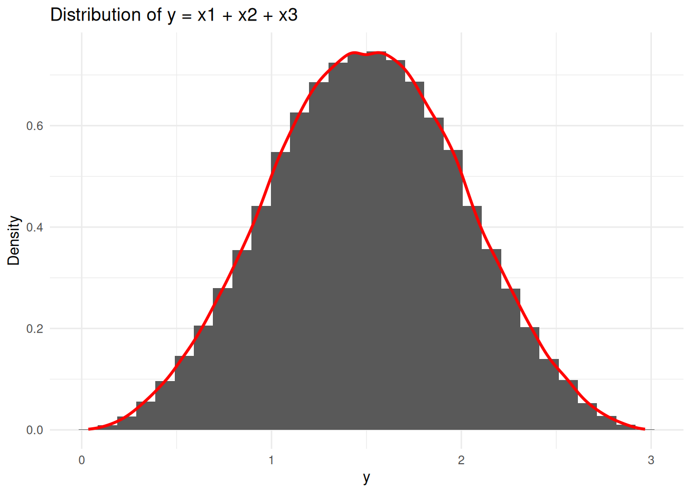

library(DT)
N = 100000 #number of measurements
x1 = sample(1:6,N, replace=T) # first dice (values are from 1 to 6)
x2 = sample(1:6,N, replace=T) # second dice (values are from 1 to 6)
head(x1)[1] 3 6 1 3 2 6The core of any research in social science is to discover and describe relationships between variables. Whether you describe a research puzzle as a “why X despite Y?” type of question, or as finding the relationships between independent and dependent variables, it generally involves unveiling causation relationships previously hidden, unknown or ignored by analysts. The social facts Y that the researchers seek to explain are generally called the dependent variable, the explanandum, while the variables supposed to explain it are called the independent variables or the explanans.
Of course, many methods exist in practice to make such claims about connection between variables. These methods are generally divided in two large sub-groups : qualitative methods, which are generally based on small-N comparisons and can for instance allow to better access interpretive dimensions, and quantitative methods. The latter methods allow to conduct large N comparisons, to replicate analyses, and have known very important recent developments related to technological improvements in the recent decades (e.g. Computational Social Science, LLMs). Similarly, these methods generally seek to find a causation relationship between variables. That is, a given variable \(Y\), is caused (and can eventually be predicted) by a series of other variables \(X_1, X_2, X_3, X_4\), etc. Hence, in a very general form, considering that \(Y\) can be explained by \(X_1, X_2, X_3, X_4\) means that we assume that there exists a function \(f : \mathbb{R}^4 \rightarrow \mathbb{R}\) that satisfies :
\[\begin{equation} Y = f(X_1,X_2, X_3, X_4) + \epsilon \end{equation}\]
Hence, quantitative research is interested in finding out that function \(f\), out of data collected on \(Y\) and \(X_1, ...\). Any research process typically involves the following stages : collection of data on variables \(Y\), \(X_1, X_2, X_3, X_4\), analysis of these data, and drawing interpretations and conclusions based on these data. The data are generally classified in two subgroups: categorical and continuous (or interval) variables. Categorical variables have a limited amount of potential values, and for instance refer to nominal measures which help qualitatively describe the observations, with no logical ordering - e.g. the gender of an interviewee can be male = 1, female = 2, else = 3, etc. - or ordinal measures, with a logical ordering - e.g. a variable that qualifies the level of religiosity of someone on a 0 to 5 scale. These ordinal and nominal variables generally describe something qualitatively. Quantitative variables can be continuous (infinite number of potential values : 0.1123, 1.24, 295) or discrete (e.g. 0, 1, 2, …).
As such, as being the first step, the data collection phase is crucial in every empirical research project - which is generally the case in political science or sociology. This data collection phase typically follows the following steps :
Ideally, the data collected should be both reliable and valid : that means, it should have a small random error (the errors affecting the measurements themselves), and limited systematic error (your measure accurately measures the concept you seek to analyse). Before turning to real data sets and data manipulation, the next sections remind basics of probability theory, that will be useful for the rest of the class.
In probability and statistics, a variable that results from a random process is called a random variable. Random variables are any kind of variables that result from a random process. A typical case useful for us is for instance in Census data : to estimate voting among the French population, we can randomly draw individuals, and ask them questions about their voting behavior. This random process explains why our variable of interest, voting, will be considered a random variable.
Imagine that you have two dices with six faces on each dice. Your random variable is the outcome of each throw of dices. this result is the paradigmatic example of what a random variable is.
You would like to assess your chances of obtaining each value contained in the set of potential outcomes \(S = \{2,3,4,5,6,7,8,9,10,11,12\}\). Intuitively, you might want to start by looking at the 2 value : 2 is only obtained in the case where you obtain one for the two dices. That is, for dice 1, you have \(1/6\) of obtaining the value, and then again \(1/6\) of obtaining 1 for the second dice. Overall, the probability of obtaining \(2\), \(P(Y=2)\) is therefore : \[ \begin{equation} P_2 = 1/6 \times 1/6 = 1/36 \end{equation} \] Of course, if you now want to look at the probability of obtaining \(3\) as outcome, \(P( Y = 3)\) your probability will be the union of two probabilities : the chance of obtaining 1 with dice 1 and 2 with dice 2, or the one of obtaining 2 with dice 1 and 1 with dice 2, which are clearly equivalent because the dices cannot be distinguished. Mathematically, this writes : \[ \begin{equation} P(Y=3) = 1/6 \times 1/6 + 1/6 \times 1/6 = 2/36 = 1/18 \end{equation} \] You see that the probability is doubled, compared to P(Y=2).
If you look at the cases where \(X_1+X_2 = \text{constant}\), they correspond to cases on the diagonal of the following table. The first diagonal is the case \(X_1+X_2 = 2\), the second is \(X_1+X_2 = 3\), \(X_1+X_2 = 4\), etc. Hence, you see that obtaining 7 is the last diagonal and therefore \[ \begin{equation} P(Y=7) = 6\times1/36 = 1/6 \end{equation} \]
\[\begin{array}{c|cccccc} & 1 & 2 & 3 & 4 & 5 & 6 \\ \hline 1 & \frac{1}{36} & \frac{1}{36} & \frac{1}{36} & \frac{1}{36} & \frac{1}{36} & \frac{1}{36} \\ 2 & \frac{1}{36} & \frac{1}{36} & \frac{1}{36} & \frac{1}{36} & \frac{1}{36} & \frac{1}{36} \\ 3 & \frac{1}{36} & \frac{1}{36} & \frac{1}{36} & \frac{1}{36} & \frac{1}{36} & \frac{1}{36} \\ 4 & \frac{1}{36} & \frac{1}{36} & \frac{1}{36} & \frac{1}{36} & \frac{1}{36} & \frac{1}{36} \\ 5 & \frac{1}{36} & \frac{1}{36} & \frac{1}{36} & \frac{1}{36} & \frac{1}{36} & \frac{1}{36} \\ 6 & \frac{1}{36} & \frac{1}{36} & \frac{1}{36} & \frac{1}{36} & \frac{1}{36} & \frac{1}{36} \end{array}\]Imagine now that you are skeptical of these theoretical findings, and you decide to carry a small experiment in order to test this. Let’s imagine that you are feeling very bored for an entire year and that you decide to launch these two dices a hundred thousand times, and report results in two tables \(X_1, X_2\) with the result for each dice. Your results might look like :
[1] 3 6 1 3 2 6In fact your final result - the sum of the two dices -, is the union of two independent events \(X_1, X_2\) being respectively the outcome of dice \(1\) and \(2\), provided that they are indeed independent. Your final result \(Y\) is therefore simply the sum of these two random variables. You can then sum :
and the function table() gives you the number of occurences for each value. The probability to obtain 7 from your sample is then simply the number of occurences that you have measured, divided by the total number of attempts that you have done, in this case 10000. Hence :
y
2 3 4 5 6 7 8 9 10 11
0.02821 0.05494 0.08432 0.11017 0.13916 0.16515 0.13960 0.11119 0.08347 0.05514
12
0.02865 
These values are called the probability distribution of the variable Y. That is, for each outcome of Y, there is a probability to obtain it (here shown on the barplot).
These probabilities are similar to those obtained by manual calculation at the beginning of this session. This is due to the very large number of observations. The law of large numbers states that the frequency of occurrence of a random variable converges towards its probability, for N ≥ 0. The graph below illustrates the evolution of the relative frequency of rolling a 7 with two dice as a function of the logarithm of the number of observations. The dice are rolled 1, 2, 3, 4… 100 times, then 200, 300, 400… 1,000,000 times. We observe that as the number of observations increases, the frequency converges towards the probability (0.16666667).
── Attaching core tidyverse packages ──────────────────────── tidyverse 2.0.0 ──
✔ dplyr 1.1.4 ✔ readr 2.1.6
✔ forcats 1.0.1 ✔ stringr 1.6.0
✔ ggplot2 4.0.1 ✔ tibble 3.3.0
✔ lubridate 1.9.4 ✔ tidyr 1.3.2
✔ purrr 1.2.0
── Conflicts ────────────────────────────────────────── tidyverse_conflicts() ──
✖ dplyr::filter() masks stats::filter()
✖ dplyr::lag() masks stats::lag()
ℹ Use the conflicted package (<http://conflicted.r-lib.org/>) to force all conflicts to become errorsNn = c(1:100, seq(from = 100, to = 100000, by = 100))
a = 0
val = 0
freqb <- data.frame(Nn = Nn, val = 0)
freqb <- freqb %>%
rowwise() %>%
mutate(val = {
sums <- sample(1:6, Nn, replace = TRUE) + sample(1:6, Nn, replace = TRUE)
freq_table <- table(sums)
if ("7" %in% names(freq_table)) {
freq_table["7"] / Nn
} else {
0
}
}
) %>%
ungroup()
ggplot(data = freqb, aes(x = log(Nn), y = val))+geom_point()+geom_line()
This value is called the expectation.
Imagine now that, due to the extreme fatigue provoked by the repetitive rolling of those dices, you throw those a bit too wildly and one falls under the table where you sit. The other one is there and shows the value 3. You want to know the expected value of \(Y\), knowing that one dice among the two is 3. This is called a conditional probability and noted \(P(Y|X_1)\), with \(| X_1\) simply meaning that \(X_1\) is considered fixed (here worth 3). Since \(X_1\) is fixed, the probability is \(P(Y|X_1) = 1/6\) for all the potential values of \(X_2\), and knowing this information is actually very precious on Y, because it considerably reduces the set of potential outcomes : \[ Y \ge 4 \text{, } Y\le 9 \text{ and } S_Y = \{4, 5, 6, 7, 8, 9\} \] \[ \begin{equation} \mathbb{E}(Y|X_1 = 3) = \sum_{i=1}^N Y_i\ * P(Y_i|X_1 = 3) \end{equation} \] and so we get : \[ \begin{align} \mathbb{E}(Y|X_1 = 3) = 1/6 \times (4 + 5 + 6 + 7 + 8 + 9) = 6.5\\ \mathbb{E}(Y|X_1 = 4) = 1/6 \times (5 + 6 + 7 + 8 + 9 + 10) = 7.5 \end{align} \] Notice that the expected value of y therefore changes, as a function of the explanatory variable, \(X_1\).
This conditional expectation is central in quantitative social science, as it is generally what the researcher seeks to evaluate, when confronted to social facts. Take the following example: you seek to understand what causes people to be happy. Imagine that you are similarly capable of measuring the level of happiness (self-reported on a 1 to 5 scale) of 10000 individuals. If you are interested to know whether happiness is influenced by the degree of religiosity of an individual, you might want to ask them questions about their practicing of religion \(X\), and then to know how \(Y\) evolves with \(X\), on average. This would lead you to be interested in the expectation :
\[
\begin{equation}
\mathbb{E}(Y) = f(X)
\end{equation}
\] This information would already be of an interesting value, yet it would not allow you to isolate the specific causation relation between happiness, and religiosity, as it is very likely the case that religiosity is perhaps correlated with something else, like income, that might both explain happiness and religiosity. As such, the expectation that does not account for that might underestimate or overestimate the role of religiosity on happiness. That is why you would rather be interested in knowing whether an individual’s religiosity impacts its happiness level, all else being equal - which is sometimes called the ceteris paribus hypothesis (latin words for all else being equal), central in econometrics. That is, in this last case, if income is the only variable that could introduce spuriousness or bias between happiness and religiosity, you might want to know : \[
\begin{equation}
\mathbb{E}(Y|X_1) = f(X_2|X_1)
\end{equation}
\] Which basically means that you are interested in how variable Y is affected by \(X_2\), for a given variable \(X_1\) - hence, this isolates the effect of \(X_2\), from the potential confounding variable \(X_1\).
Now simply imagine that you repeat that process with dices that have \(n = 1000, 1400, 800\) faces, with each value ranging from \(1/n\) to 1. And that you would like to know what are the final probabilities of having any decimal number between 0 and 3. Of course, the manual computation of this would be very cumbersome - which is why automatising the process with R can prove very useful. Reusing the same code would give :
y
1 1.7769643
2 1.7235357
3 2.3687143
4 2.2001071
5 1.8053929
6 0.9625000
7 2.5004643
8 1.1010000
9 1.8180714
10 0.9131429`stat_bin()` using `bins = 30`. Pick better value `binwidth`.
Here, you clearly see that your variable is now almost continuous, and your probability to obtain one specific value becomes extremely small. We therefore generally focus on the probability of having \(Y\le Y_0\), that is, the sum of probabilities of obtaining all the values below \(Y_0\) (included). Coming back to our example of dices : for one dice, your probability of obtaining a result \(\le 4\) is just the sum of the probabilities of getting all the values before 4 : \[\begin{equation} P(X_1 \le 4) = 1/6 + 1/6 + 1/6 + 1/6 = 4/6 \end{equation}\] For a continuous variable, this sum is noted as a fancy integral - yet it means the exact same thing : \[\begin{equation} P(Y \le Y_0) = \int_{R_Y}^Y_0 f_Y (y') \text{d}y' \end{equation}\]
Of course in practice dices are not extremely interesting… and you may want to analyse real data, describing actual social facts. Yet the same logic will apply to real data ! Imagine for instance working on the French communes: you seek to describe the median income in those communes, but you only have access to a random sample of 10.000. You will need a coding environment : RStudio (open source, free, huge community) and data… : your task will be to find it online.
The advantage of R over other softwares, like Stata/SPSS, is that it is entirely free and open-source, and that is maintained by a very large community of users. A very nice environment where to code on R is RStudio - which provides different panels where to organise your code, create new projects, etc. If you need help to download R and RStudio, please check Malo Jan’s webpage https://malo-jn.quarto.pub/introduction-to-r/session1/0102_setup.html, or other sources like https://rstudio-education.github.io/hopr/starting.html. In general, the R documentation, StackOverflow and AI are you friends in these cases is very useful !
The first step when you launch RStudio is to create a project in which you can work. The best way to do that is to go in File > New Project > New directory > New Project > Create a new directory. In the last step, you can choose the location of your directory. This will create a folder, in which your project will be contained. There, you will be able to create new scripts (“.R” files), where you will be able to code. You can also code directly in the console. If you need reminders on the basic usage of R, please visit https://malo-jn.quarto.pub/introduction-to-r/.
R comes with basic language and functions : base R. This basic infrastructure for instance allows you to add, multiply, conduct basic operations in your files. In general, you want to perform many more operations, which is why I strongly recommend the use of packages and libraries. These packages are already coded functions and tools that allow you to be much more efficient in your code. Among all those libraries, tidyverse is extremely useful. You can load and install such packages in this way :
Other useful packages are those that allow to download and import data. Imagine that you have data retrieved from the internet : here a file containing information on the french communes - demographics2024.xlsx. This file is an “excel” file, hence it should be read by a program capable to read excel formats: this requires the readxl package. Another more general function is import(), which comes with the package rio. This allows you to disregard the format of your file (it is coded to support various formats). You can also export() data using rio.
library(readxl) # needed to read excel without "rio"
communes <- read_excel("data/demographics2024.xlsx") # relative path
communes <- read_excel("/Users/Desktop/Website/methods_policyevaluation/slides/session1/data/") # absolute path
#using the "rio" package
library(rio)
communes <- import("data/demographics2024.xlsx")Once you have data imported, you can rapidly inspect it, by using the function head() and tail(), which allow you to get the first and last rows of a data set, see the different variables it contains and their type.
# A tibble: 3 × 43
codecommune Year codedep agri indp cadr pint empl ouvr chom pact
<chr> <dbl> <chr> <dbl> <dbl> <dbl> <dbl> <dbl> <dbl> <dbl> <dbl>
1 01001 2024 01 0 39 33 14 86 147 26 319
2 01002 2024 01 0 39 9 0 66 0 9 114
3 01006 2024 01 0 0 0 34 23 23 0 80
# ℹ 32 more variables: age <dbl>, popf <dbl>, francais <dbl>, etranger <dbl>,
# prixbien <dbl>, capitalratio <dbl>, npropri <dbl>, nlogement <dbl>,
# pop <dbl>, revmoyfoy <dbl>, revtot <dbl>, recetteimpotslocaux <dbl>,
# recette <dbl>, baseimpotslocaux <dbl>, nodip <dbl>, sup <dbl>,
# Libellé <chr>, Exploitations <dbl>, Personnes <dbl>, UTA <dbl>, SAU <dbl>,
# PBS <lgl>, dens <chr>, densaav <chr>, dens7 <chr>, ntot <dbl>, pagri <dbl>,
# pindp <dbl>, pcadr <dbl>, ppint <dbl>, pempl <dbl>, pouvr <dbl># A tibble: 3 × 43
codecommune Year codedep agri indp cadr pint empl ouvr chom pact
<chr> <dbl> <chr> <dbl> <dbl> <dbl> <dbl> <dbl> <dbl> <dbl> <dbl>
1 95637 2024 95 7 186 1208 2083 1439 862 481 5785
2 95651 2024 95 0 19 43 117 91 56 45 326
3 95676 2024 95 0 41 46 75 55 3 22 220
# ℹ 32 more variables: age <dbl>, popf <dbl>, francais <dbl>, etranger <dbl>,
# prixbien <dbl>, capitalratio <dbl>, npropri <dbl>, nlogement <dbl>,
# pop <dbl>, revmoyfoy <dbl>, revtot <dbl>, recetteimpotslocaux <dbl>,
# recette <dbl>, baseimpotslocaux <dbl>, nodip <dbl>, sup <dbl>,
# Libellé <chr>, Exploitations <dbl>, Personnes <dbl>, UTA <dbl>, SAU <dbl>,
# PBS <lgl>, dens <chr>, densaav <chr>, dens7 <chr>, ntot <dbl>, pagri <dbl>,
# pindp <dbl>, pcadr <dbl>, ppint <dbl>, pempl <dbl>, pouvr <dbl>[1] 10000This shows you for instance that you have communes going from departement 01 to 95, for the Year 2024, with different socio-demographic information about the occupational structure, the median income, etc.
For categorical variables, you can check their different values in the following way:
[1] "Rural" "Urbain intermédiaire" "Urbain dense"
Rural Urbain dense Urbain intermédiaire
8803 210 987 Length Class Mode
10000 character character Here, we show the number of communes from the sample that are ‘rural’, ‘urbain intermédiaire’ or “urbain dense’. unique gives you the different values present in your variable, while table returns you the different values present in the data set and their number of occurences. Note that summary(), which is extremely useful for continuous variables, here returns the type of your variable, because it is non-numeric.
If you look at a continuous variable - e.g. the median income in communes -, you can use the function summary() to obtain essential informations on the variable : its mean, median, its quartiles, and the number of NA’s. NA’s are gaps in your variable, missing information - that are therefore coded as Not Assessed. You may either remove these, by using drop_na(), or fill these, by adding zeros instead or the mean of the variable. This can be done in this way :
Min. 1st Qu. Median Mean 3rd Qu. Max. NA's
10610 25871 29675 31122 34586 132947 10 [1] 10610.21 132946.95 Min. 1st Qu. Median Mean 3rd Qu. Max.
10610 25871 29675 31122 34586 132947 Min. 1st Qu. Median Mean 3rd Qu. Max.
10610 25876 29682 31122 34581 132947 Notice that your last summary no longer contains NA values, and has an unchanged mean value - which is the objective of filling with mean values instead of the NA’s.
You can also easily have a look at the density, by using ggplot2 package, that is extremely useful for plots and graphs in R. ggplot works this way: you just have to specify your data (here comm_r), your variables (typically x, y and color) in Aesthetic Mapping (aes) aes(x =, y =, color = ) and then add different shapes to your graph : here geom_density(). You can also try plotting a histogram with geom_histogram() !
Something we have not discussed so far and is quite important is the notion of skewness of a distribution. To introduce you to this notion, take the following example : you analyse the age distribution in a small school bus. The following ages are present in the bus :
\[\begin{equation} \text{Ages} =\{13,15,15,16,16,17,13,15,17, 18, 55\}, \end{equation}\]
Where most ages correspond to pupils, and the last one is the bus driver. If you compute the median, it is worth 16 (the value that splits your distribution in two chunks with equal sizes), while if you compute the mean, \(\bar{\text{Age}} = 19.09\). Hence, your mean is very sensitive to extreme values ! That is why your distribution can be ‘skewed’, and non-symmetrical, if your median is different than your mean. You typically find the three cases : - Median \(<\) Mean : positively skewed (the mean is pushed upwards by high values) - Median \(>\) Mean : negatively skewed (the mean is pushed downwards by low values) - Mean = Median : symmetrical distribution
In the previous case, for instance, the distributions are positively skewed : you see in the distribution that some very high values are pushing the mean upwards, compared with the median. In order to bring down these extreme values, you can use transformations, like logarithms, to make a positively skewed variable look more symmetrical:
R also allows you to very easily compute expectations. In the case of median income : \[\begin{equation} \text{E}(\text{MI}) = \frac{1}{10000}\sum_{i=1}^{10000} \text{MI}_i, \end{equation}\] is simply this way:
And the conditional expectations can also simply be computed by filtering out the values that are undesired.
[1] 30463.72[1] 35961.97Where you clearly see that :
\[\begin{equation} \text{E}(\text{MI}| \text{dens} = \text{Rural}) \le \text{E}(\text{MI}| \text{dens} = \text{Urbain}) \end{equation}\]
Should we conclude that median income is significantly smaller in rural communes than in urban areas ? The density plot indeed shows that rural areas are more concentrated in the lower income regions, compared with urban areas, but the dispersion being quite large for urban areas… it is hard to know whether this difference is statistically significant or not ! The typical way to compare these two means is to use a t-test.
Imagine that I would like to verify, lets say with a confidence margin of 99%, that \[\begin{equation} \text{E}(\text{MI}| \text{dens} = \text{Rural}) \le \text{E}(\text{MI}| \text{dens} = \text{Urban}) \end{equation}\] The t-test consists in computing a t-statistic comparing the means of the two independent samples : \[\begin{equation} t = \frac{\bar{X_1} - \bar{X_2}}{\sqrt{\frac{s_1^2}{n_1}+\frac{s_2^2}{n_2}}} \end{equation}\] Under the assumption that the two variables have normal distributions. If the two means are indeed statistically similar, that means that the t value should be non discernible from 0, with the 99% level of confidence decided. In the case where they are different, the t-value should be significantly different than 0. That means, the confidence interval defined at the 99% confidence level : \[\begin{equation} (\bar{X_1} - \bar{X_2}) \pm t_{.99} * \sqrt{\frac{s_1^2}{n_1}+\frac{s_2^2}{n_2}} \end{equation}\] should not include 0. In R, you can easily implement that using :
rural_income <- comm_r %>% filter(dens == "Rural") %>% pull(revmoyfoy)
urban_income <- comm_r %>% filter(dens == "Urbain dense" | dens == "Urbain intermédiaire") %>% pull(revmoyfoy)
t_test_result <- t.test(
rural_income,
urban_income,
alternative = "two.sided",
conf.level = 0.99,
var.equal = FALSE # Use Welch's t-test for unequal variances
)Where you test the NULL hypothesis, which is that the means are similar - hence that the difference is not statistically different than 0. If your p-value is below 0.01, you conclude that your hypothesis is rejected. The result of the t-test ran above indeed shows you that your 99% confidence interval [-7135.543; -5418.664] excludes 0, which means that the test is indeed significant, and you can clearly reject the NULL hypothesis with 99% confidence (even much more) : the means are different, and the average difference is 6277, 11 euros (36 640,58 - 30363,47).